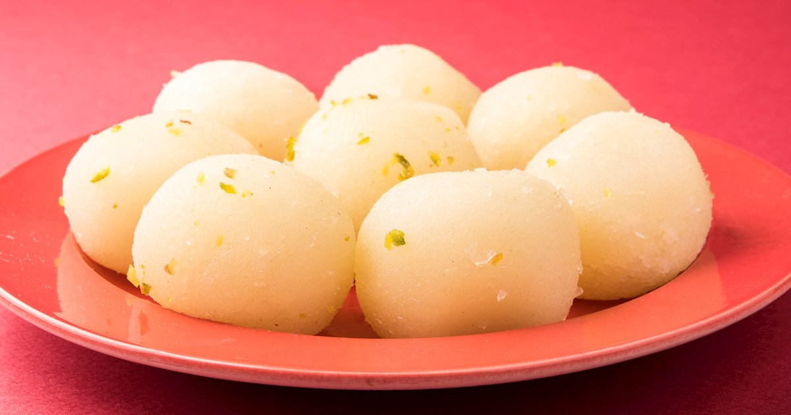

I am Vinay Marella.
I am pursuing my masters in Computer Science at Northwest Missouri State University.I am intrested in reading books and comics,playing games,surfing in net,watching movies and listening music
Rasgulla is a very popular dairy-based sweet across all over India and it is also known as rasogolla or rosogolla or rasogulla or rosogulla or rasogola. It is basically a sweetened syrupy cheese ball which is white in colour (mainly) has a very soft texture and excellent taste.
